Grafana Guide: Thresholds, Value Mappings, Overrides and Data Links
|
This content was generated with the assistance of AI and should be verified against the official documentation before being relied on in production. |
Checked on 2026-11-11 against Grafana 13.3.x.
What you build
You add a table panel called Requests per second by route to the dashboard Bookshelf (guides) and then shape how its values look and behave with the field tools of the panel editor. The unit and the decimals format every rate, thresholds colour the cells orange from 2 and red from 4 requests per second, a value mapping shows the word Quiet for the routes with little traffic, one override turns the Value cells into coloured cells, and a second override turns each route name into a link that opens a detail dashboard or Explore.
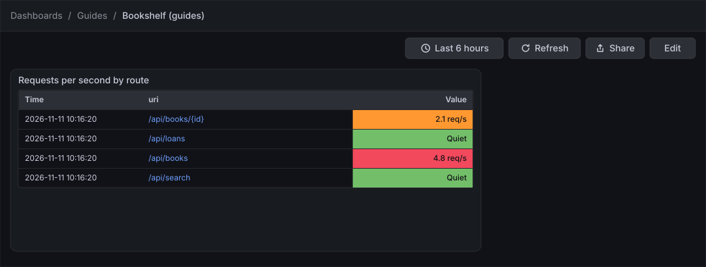
Before you start
-
Start the Grafana profile of the hands-on lab and wait about a minute:
cd lab docker compose --profile grafana up -d -
Open http://localhost:3000, sign in as
adminwith the passwordadmin, and click Skip when Grafana 13.3 asks you to update the default password. -
Do the earlier guides in this series, at least Create a dashboard and the first panel, which creates the dashboard Bookshelf (guides) in the folder Guides. The guide on Tables builds a similar panel with transformations, but it is not required.
-
The data source Prometheus is provisioned by the lab and is the default data source. The load generator runs in its default mode and gives the query traffic to draw.
-
The data link of the last phase opens the provisioned dashboard Bookshelf service health, which the lab loads for you.
-
The guide was checked on Grafana Enterprise 13.3.0 (the free image, no licence key). Editing dashboards needs the Editor or Admin role of the organization;
adminhas it. -
The figures are drawings of the Grafana 13.3 user interface, not screenshots, so small details can differ from your screen. A highlighted box with a number marks the control of the step with the same number.
Steps
Grafana 13.3 has no separate All and Overrides tabs in the panel editor. The options pane of a visualization lists every category, one below the other, and the Show only overrides icon in its header narrows the list to the options that overrides set. The field tools of this guide live in the categories Standard options, Data links and actions, Value mappings and Thresholds, and in the Add field override button at the end of the pane.
The screen maps of the dashboard in edit mode and of the panel editor are in the guide Create a dashboard and the first panel; come back to them when a control is not where a figure shows it.
Add a table panel
-
In the left navigation, click Dashboards, then open the folder Guides and the dashboard Bookshelf (guides).
-
Click Edit.
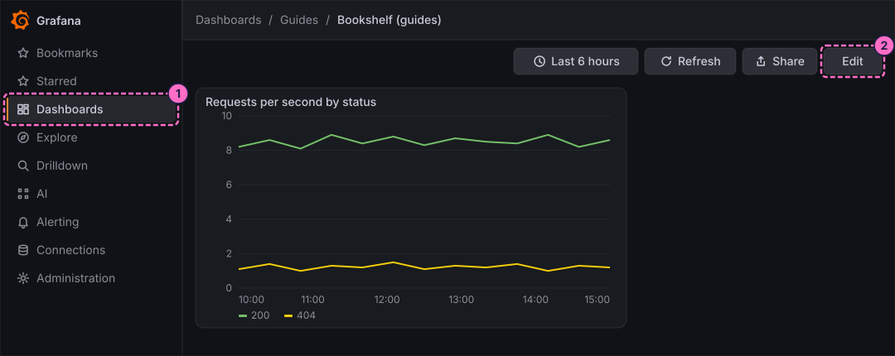
-
Click Add in the toolbar.
-
In the Add pane of the right sidebar, click the Panel tile.
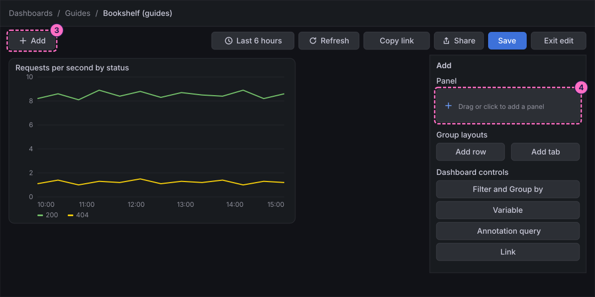
-
In the Panel pane that replaces the Add pane, click Edit visualization.
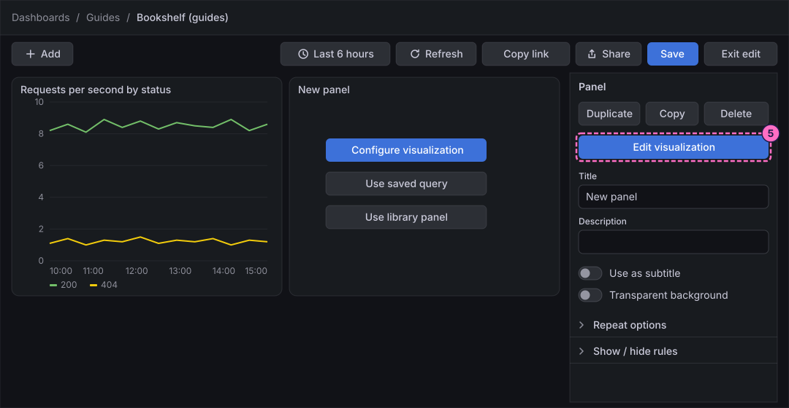
-
At the bottom of the panel editor, check that Data source shows Prometheus. In query A, click Code in the Builder / Code switch.
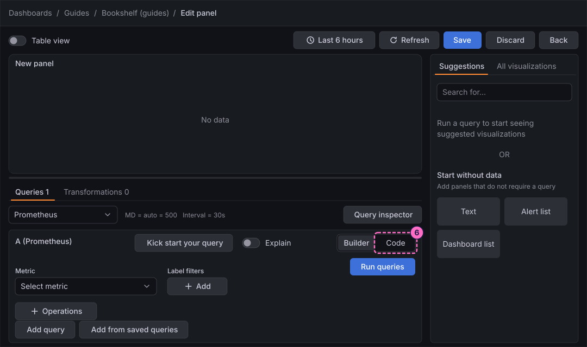
-
Click inside the query editor first, so that it has the focus, then type the query:
sum by (uri) (rate(http_server_requests_seconds_count{application="bookshelf"}[1m])) -
Open the Options line of the query and set Format to Table.
-
In the same line, set Type to Instant.
-
Click Run queries.
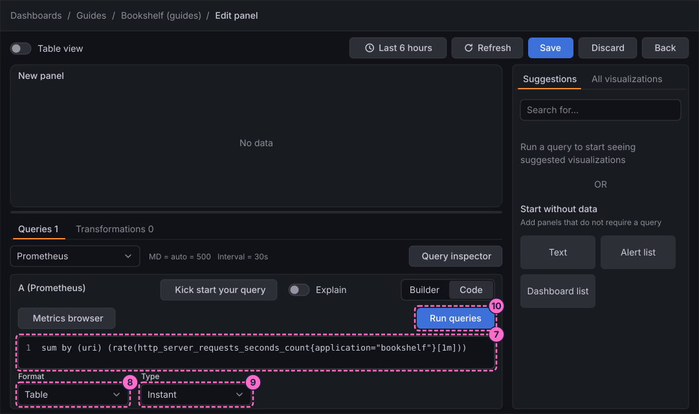
-
In the right column, click the All visualizations tab.
-
Click Table ("Supports many column styles").
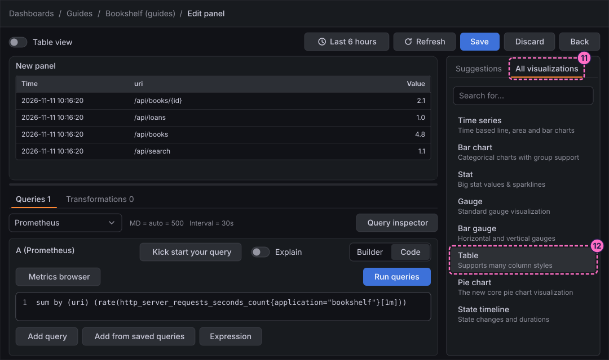
Name the panel and set the unit
-
In the options pane, under Panel options, type
Requests per second by routein Title. -
Under Standard options, open Unit and choose the unit for requests per second (type
requestsin the search box of the picker). -
In Decimals, type
1. The cells now read like4.8 req/s.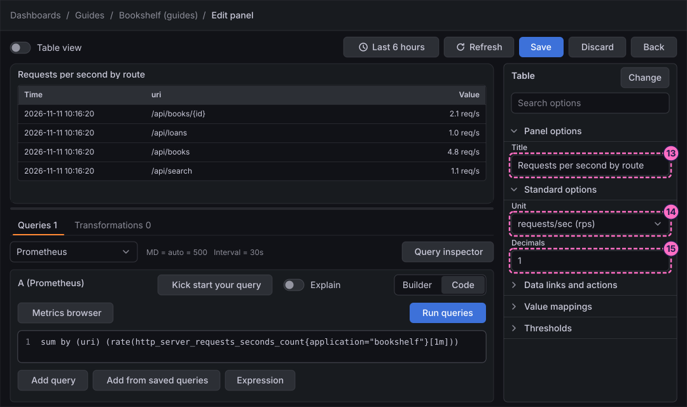
Colour the values with thresholds
-
Open the category Thresholds. A new panel starts with a green Base step and one more step, which is red and normally holds
80. Replace the value of the red step with4. -
Click Add threshold.
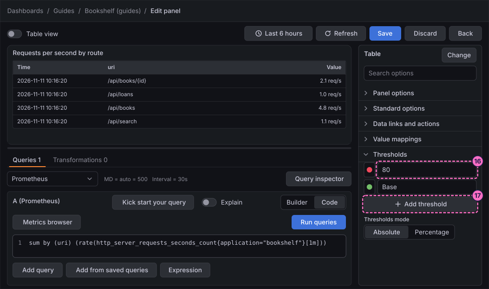
-
Type
2in the value of the new step. Leave Thresholds mode on Absolute, so that the values are request rates and not percentages. -
Click the colour dot of the new step and choose orange.
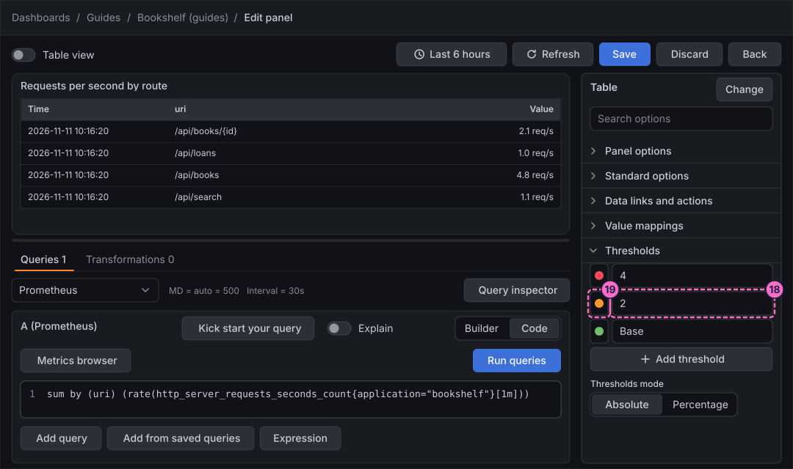
The preview does not change yet: a table shows the colours of the thresholds only for a cell type that uses them, which step 26 sets.
Map values to words
-
Open the category Value mappings.
-
Click the control of the category that adds value mappings.
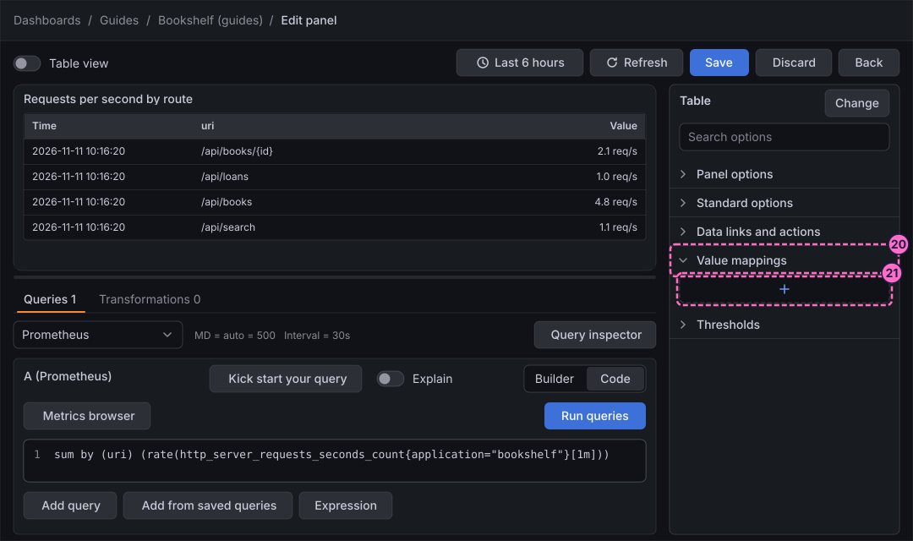
-
In the dialog that opens, add a mapping for the range from
0to1.2with the display textQuiet. -
Save the dialog with its confirm button. The category now lists the mapping.
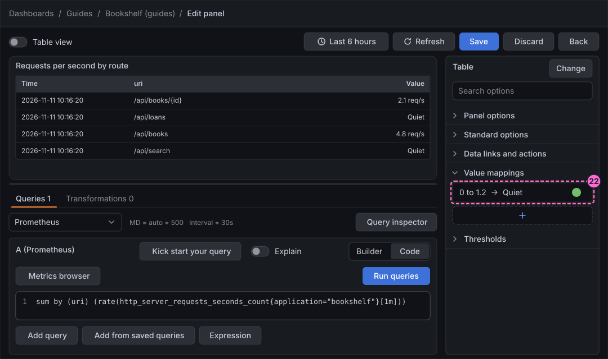
Override one field
An override applies options to one field instead of to every field. Here it makes the Value cells show the colours of the thresholds.
-
Scroll to the end of the options pane and click Add field override.
-
In the new override, choose the matcher that selects a field by its name, and pick the field
Value. -
Add the override property Cell type, found under Cell options, and set it to the coloured background type. The Value cells turn red, orange and green and show Quiet for the low rates.
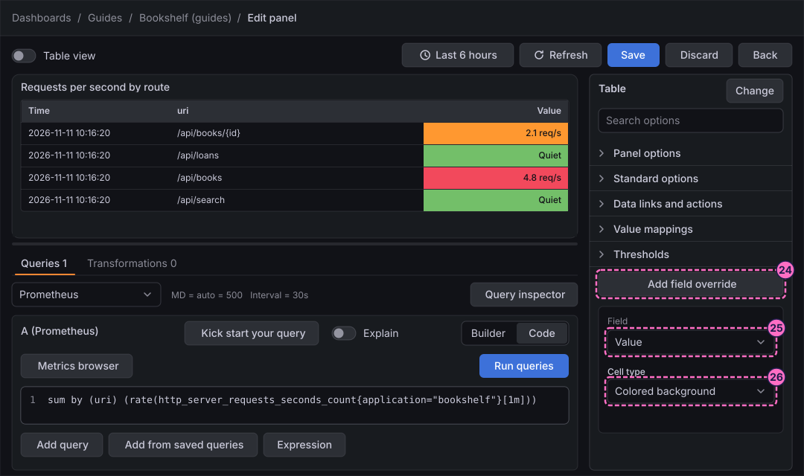
Link the rows to a dashboard and to Explore
-
Click Add field override again.
-
In the new override, choose the same matcher by name and pick the field
uri. -
Add the override property for data links, the one named like the category Data links and actions.
-
Add a link with the title
Route detailand this URL, which opens the provisioned dashboard and sets its variable Route to the route you click:/d/bookshelf-service-health?var-route=${__data.fields.uri} -
Add a second link with the title
Logs in Exploreand this URL on one line, which opens Explore on the Loki data source with the Bookshelf logs of the last hour:/explore?schemaVersion=1&panes={"a":{"datasource":"loki","queries":[{"refId":"A","expr":"{application=\"bookshelf\"}"}],"range":{"from":"now-1h","to":"now"}}}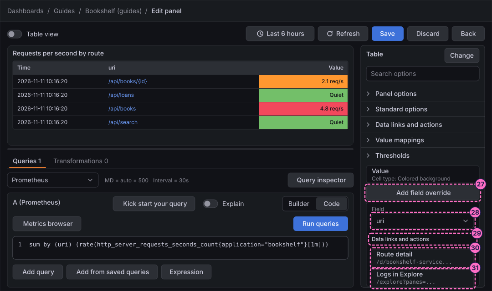
-
Click Save in the header of the editor.
-
In the Save dashboard drawer, click Save.
-
Click Back.
-
Click Exit edit.
-
If Grafana 13.3.0 shows the dialog Unsaved changes, click Save, and click Save again in the drawer that opens.
-
In the table, click the route
/api/books. A menu offers the two links. -
Click Route detail. The dashboard Bookshelf service health opens with the Route variable set to
/api/books. -
Use the back button of the browser, click the route again and choose Logs in Explore; Explore opens on the Loki data source.
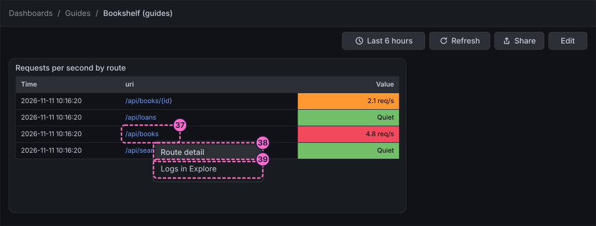
Check the result
Open Dashboards → Guides → Bookshelf (guides). The table shows one row for each of the four routes with the rate and the unit req/s. The route names are links. The Value cells are green below 2, orange from 2 and red from 4, and the routes with a rate up to 1.2 show the word Quiet instead of the number.
To see the mapping take over, stop the load generator, wait about two minutes for the one-minute rate window to drain, and press Refresh:
curl -X POST localhost:8090/mode/stopAll the rows then show Quiet on green cells. Restore normal traffic afterwards:
curl -X POST localhost:8090/mode/normalVariations
-
Colour the cell text instead of the background, or draw the value as a bar: change only the Cell type property of the first override.
-
Switch Thresholds mode to Percentage to treat the steps as a share of the field’s Min and Max, set under Standard options.
-
Use Value mappings on a status field to turn codes into words, for example the HTTP status
404intoNot found.
What can go wrong
| Symptom | Cause | Fix |
|---|---|---|
The thresholds change nothing in the table |
The default cell type draws plain numbers, so no colour is used. |
Set the override property Cell type to the coloured background type on the field |
The Value column shows |
The unit was not chosen, or the choice was typed into the picker without selecting an entry. |
Open Unit again, search for |
A click on a route does nothing |
The override matched another field than |
Open the editor again, check the matcher of the second override and save the dashboard. |
Explore opens empty or ignores the query |
The URL of the second link was broken across lines or lost a bracket. |
Edit the link and paste the URL again on one line, exactly as in step 31. |
The detail dashboard shows all routes |
The link text is not exactly |
Check the URL of the first link against step 30. |
Clean up
Keep the panel if you want to try the variations. To remove it, open the dashboard in edit mode, select the panel, click Delete in the Panel pane of the right sidebar and save the dashboard. The later guides in this series do not depend on it.
Where to go next
-
Previous guide: Geomap.
-
Next guide: Transformations and expressions, which reshapes the data before the field tools see it.
-
Reference: Field Configuration describes units, thresholds, value mappings, overrides and data links in full.